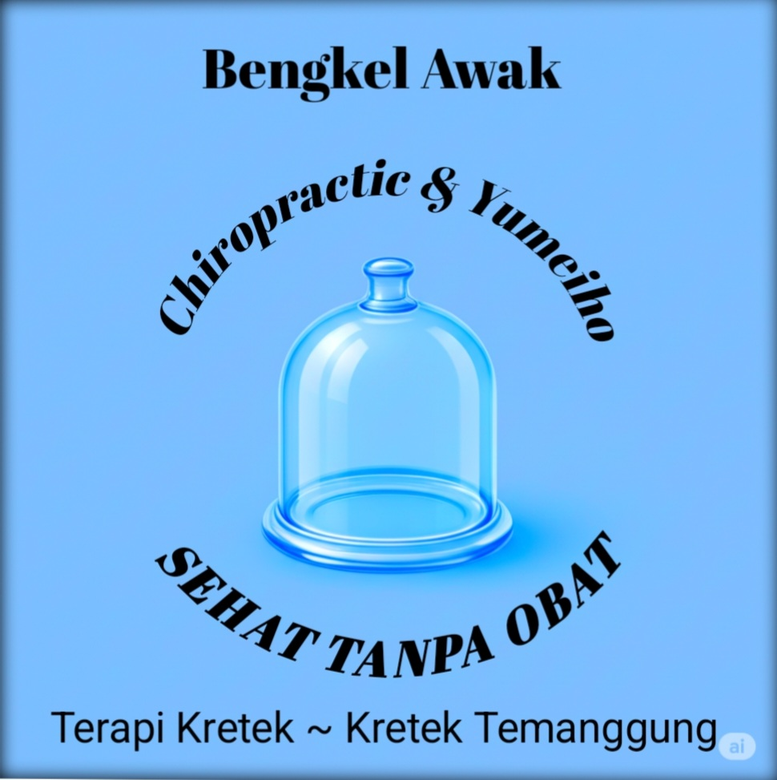

BENGKEL AWAK
TERAPI KRETEK-KRETEK TEMANGGUNG
Dengan Metode: CHIROPRACTIC & YUMEIHO
NIB: 0909230027489 - IX/09/2023
CHIROPRACTIC
YUMEIHO
SEHAT TANPA OBAT

Metode:
- Terapi pembetulan tulang belakang dan persendian
- Terapi listrik
- Terapi sujok
- Dry cupping
- Bekam
- Asam urat
- Kolesterol
- Trigliserida
- Diabetes / Gula darah
- Hipertensi
Treatment untuk keluhan:
- Saraf kejepit (HNP)
- Sakit tulang belakang
- Sakit persendian
- Sakit pinggang / pinggul
- Sakit kepala (migrain / vertigo)
- Sakit gigi
- Sakit belikat (centhong)
- Sakit sendi leher (cethik)
- Tangan / kaki kebas / kesemutan
- Nyeri otot
- Kaki panjang sebelah
- Dan lain-lain
 Beranda
Beranda Tentang
Tentang Metode
Metode Treatment
Treatment Galeri
Galeri Testimoni
Testimoni Lokasi
Lokasi Kontak
Kontak Artikel
Artikel FAQ
FAQ